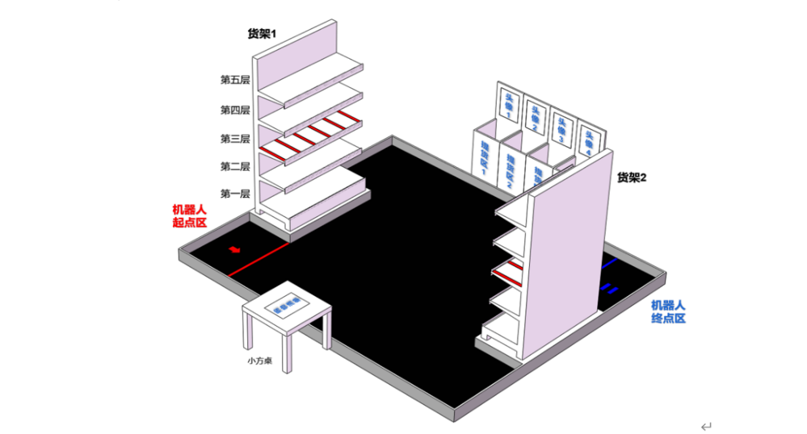
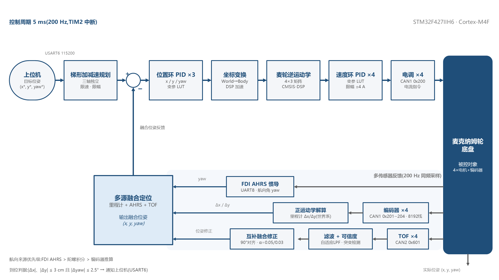
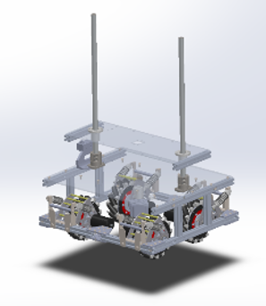
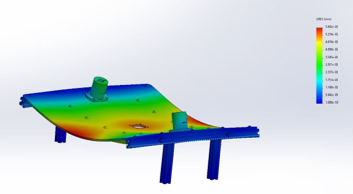

麦克纳姆轮超市机器人
浙江省大学生机器人竞赛 · 省一等奖
队长（1/3）
2026 年
面向超市货架场景的全自主机器人：实现自然语言识别、顾客识别、货品抓取与投放、货架自动补货。作为队长，我负责整机架构设计与运动控制开发，以及整机的机械结构设计仿真与装配。

运动控制
- STM32F427 麦克纳姆轮运动学建模与闭环整定：位置环 PID（x / y / yaw 三轴独立）→ 坐标变换 → 麦轮逆运动学 → 速度环 PID ×4，控制周期 5 ms（200 Hz，TIM2 中断）。
- 梯形加减速规划（三轴独立，限速限幅）；到位判据 |Δx|、|Δy| ≤ 3 cm 且 |Δyaw| ≤ 2.5°。
- CAN 总线适配大疆 C620 电调，变参 LUT 限幅 ±4 A 电流指令。

姿态融合与通信
- Mahony 姿态解算 + CMSIS-DSP 硬件加速浮点运算。
- 串口 DMA 双缓冲抗丢包；APP—驱动—BSP—硬件抽象四层软件架构。
感知定位
- 4 路 TOF 融合：自适应 LPF + 突变检测 + 互补融合修正（90° 对齐），实现定点导航、货架对位与自主避障。
- 里程计 + AHRS 惯导 + TOF 多源融合定位，航向来源优先级：FDI AHRS > 陀螺积分 > 编码器推算。
- K230 视觉并行部署，压缩 1/5 任务耗时。

